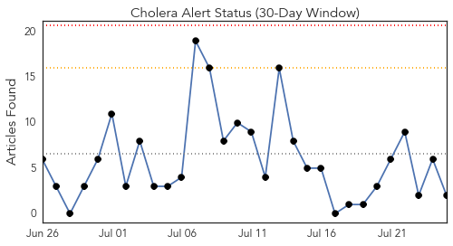
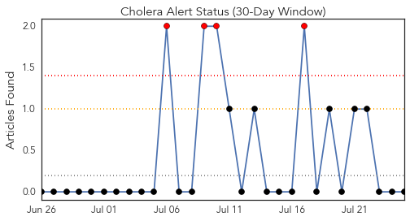
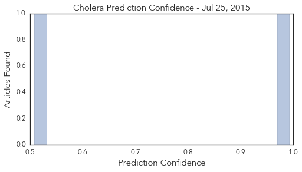
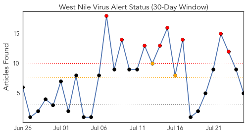
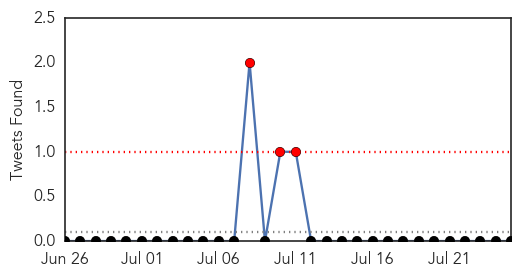
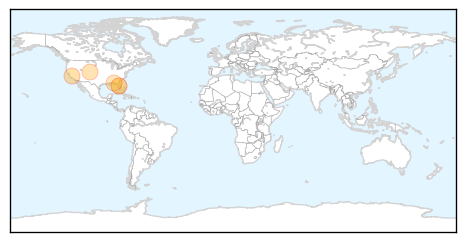
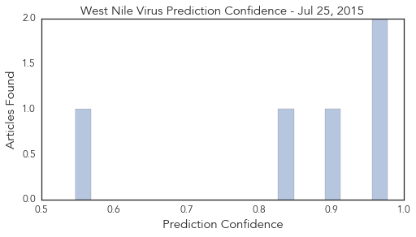

Cholera
30-Day Web Trend
0 alerts, 0 warnings

30-Day Twitter Trend
5 alerts, 0 warnings

Article Locations

Article Confidences
Top Articles:
Top Tweets:
-
No tweets found for Jul 25, 2015
West Nile Virus
30-Day Web Trend
8 alerts, 2 warnings

30-Day Twitter Trend
0 alerts, 0 warnings

Article Locations
Article Confidences
Top Articles:
- 0.977
- FLORIDA confirms 9 human cases of LEPROSY so far this year ~ New study suggests CHRONIC WASTING DISEASE may be transmissible to HUMANS ~ WYOMING confirms three cases of TULAREMIA ~ Officials confirm f
- 0.962
- West Nile in Nashville mosquito pool but not in Knox
- 0.905
- Colorado Horse Diagnosed With West Nile Virus
- 0.846
- Human Case of West Nile Virus Confirmed in Walton County
- 0.547
- Bay County Health Dept. Warns Residents to Protect Themselves Against Mosquitoes
Top Tweets:
-
No tweets found for Jul 25, 2015